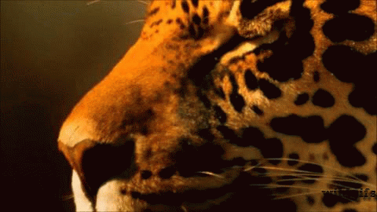
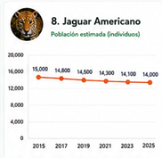

Jaguar (Panthera onca)
El felino más grande de todo el continente americano sufre una pérdida acelerada de sus selvas y bosques debido a la ganadería extensiva. Los constantes conflictos con rancheros defensores de su ganado, los atropellamientos en carreteras y el mercado negro emergente que codicia sus colmillos y pieles ponen en grave jaque su supervivencia a largo plazo. El jaguar es el felino más grande de América. Actualmente se encuentra en peligro debido a la destrucción de su hábitat y la caza furtiva ilegal.




Análisis de Población
Los censos indican una reducción del 40% en su población silvestre durante los últimos 15 años en América Latina.